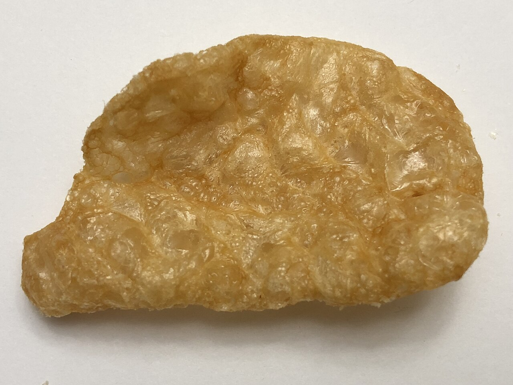

a dishpork skins
also: skins · cracklins · cracklings · crackling · pork rinds · fried skins
'Skins' at the eastern counter; 'cracklins' when they come off a whole hog at a pig pickin or out of the lard pot at a hog killing.

The pig's hide, cooked until it blisters and cracks. On an eastern whole hog the skin faces up through the night and is turned to the coals at the end to crisp; at Skylight Inn it is chopped into the meat, where the crunch and the salt are part of what 'barbecue' means. Sold on their own, skins are a side or a snack: fresh fried squares with pimento cheese at Sam Jones BBQ, a pork skin sandwich with slaw at Lexington Barbecue. In the Pee Dee the hog is sometimes skinned before cooking and the skin fried on its own. A crackling keeps a little fat and meat under the skin; a rind is skin alone.
The story Cited · wp-whole-hog-barbecue
The skin is the pit's own by-product. At a hog killing the fat is rendered for lard and the cracklings are what is left in the pot, and tradition holds — crackling bread, cornbread with cracklings baked in, was the winter bread of the farm. On the eastern pit the same crust comes off the barbecue: the small hogs of the Carolinas are cooked hot enough for the skin to crisp, and the skin takes up more of the smoke than the meat does, so the chopped skin carries the flavor of the fire into every bite. At a pig pickin some cooks wipe the ash from the skin with paper towels or a whisk broom before the hog is turned, to keep the cracklings clean. Tennessee cooks larger hogs at lower heat and the skin never crisps — one of the marks that separate the Carolina hog from the Memphis one. At Skylight Inn the chop takes in tenderloin, inner meat and crisped skin together, which NCpedia records as the eastern habit: in some areas bits of skin are integral to the finished product. South of the line the Pee Dee sometimes strips the hide before the pig goes on and fries it apart, and NCpedia notes North Carolinians who follow that lead, sorting skin from outside meat from inside meat.
How it is done Cited · wp-pork-rind
On the pit: the hog cooks skin-up, is turned skin-down at the end, and the blistered skin is chopped with cleavers into the meat, or lifted, salted and broken into pieces. Fried: the skin is cut into squares, rendered slowly, then fried hot so it puffs. Commercial rinds are dried pellets rehydrated and fried in pork fat at 200–210 °C, which swells them to five times their size; the pink or purple spot on a bagged rind is a USDA inspection stamp. Eaten with the fingers, salted, with hot sauce, or with pimento cheese.
Today Cited · web-samjones-menu
Sam Jones BBQ lists fresh fried pork skins with housemade pimento cheese (September 2026). Lexington Barbecue sells a pork skin sandwich with slaw at $4.50 cash, $4.65 card (September 2026). Bagged rinds from the gas station are the same thing at a distance.
Facts
| course | side |
|---|---|
| meat | whole hog |
| styles | Eastern North Carolina barbecue, Pee Dee whole-hog barbecue, Lexington-style barbecue |
| region | The Carolinas, Eastern North Carolina, The Pee Dee, North Carolina, South Carolina |
| links | Pork rind — Wikipedia · Whole hog barbecue — Wikipedia |
| confidence | high · updated 2026-09-15 |
Recipes you may use
Public-domain cookbooks are printed here in full, spelling and all. Where a recipe is still in copyright, the page gives the ingredients — a list of what goes in is a fact — and links to the rest.
To Try the Fat (receipt 215)
Cracklings as a by-product of rendering lard at hog-killing, which is where most of them came from: fried out of the fat rather than crisped on a pit. 'When done, the cracklings will be a good brown, and float to the top and break crisp' is the test. The running head is unreadable in the scan, so no page is given; the receipt number locates it.
To whiten Lard
From the household chapter rather than the cookery, and included for the same test by another hand: the cracklings tell you when to stop. The lye is for the lard, not for eating. No page is legible in the scan.
Eastern North Carolina Barbecued Pig
- 80 pound pig (butchered with head removed)
- Salt
- 40 pounds charcoal (for charcoal cooking option)
- Your favorite vinegar-based Eastern NC sauce
Makes about 27 lb of meat, serving 30–40.
The skin crisped on the pit rather than in a kettle: turned down to the coals for the last two hours with the lid closed.
Not to be confused with
- outside brown — Skin is glassy and blistered and shatters; outside brown is dark meat from the outside of a shoulder and chews. If it came off a whole hog in the east it is skin.
Its kin
Who points back
Pictures
{kind=link}

{kind=link}
Sources
- Whole hog barbecue — Wikipedia · link
- Skylight Inn BBQ — Wikipedia · link
- Pork rind — Wikipedia · link
- Cracklings — Wikipedia · link
- Cornbread — Wikipedia · link
- Pig pickin' — Wikipedia · link
- Barbecue in South Carolina — Wikipedia · link
- NCpedia — Barbecue (Encyclopedia of North Carolina) · link
- Menu · link
- Lexington Barbecue — Menu · link
- Mrs. Hill's New Cook-Book; or, Housekeeping Made Easy. A Practical System for Private Families, in Town and Country, Especially Adapted to the Southern States — Mrs. A. P. Hill (Annabella P. Hill), of Georgia, 1867 · link
- Dixie Cookery; or, How I Managed My Table for Twelve Years. A Practical Cook-Book for Southern Housekeepers — Mrs. [Maria Massey] Barringer, of North Carolina, 1867 · link
- Cookbook:Eastern North Carolina Barbecued Pig — Wikibooks Cookbook · link
Where it came from: Cited a source we name · Harvested pulled from an open dataset · Tradition what the tradition says, hedged · Inference this project's reasoning · Field somebody stood there. This record as JSON.